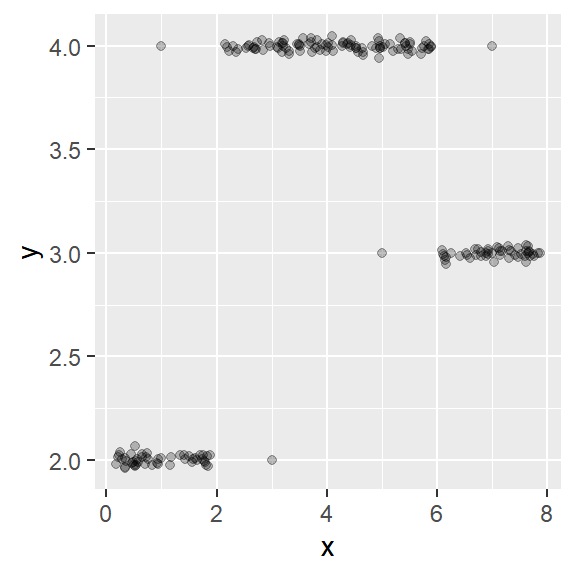

# you may need the following packages for this exercise sheet:
library(mlr3)
library(mlr3learners)
library(ggplot2)
library(mlbench)
library(mlr3viz)Exercise 4 – Classification II
$$
% math spaces % N, naturals % Z, integers % Q, rationals % R, reals % C, complex % C, space of continuous functions % machine numbers % maximum error % counting / finite sets % set 0, 1 % set -1, 1 % unit interval % basic math stuff % x tilde % argmax % argmin % argmax with limits % argmin with limits% sign, signum % I, indicator % O, order % partial derivative % floor % ceiling % sums and products % summation from i=1 to n % summation from i=1 to m % summation from j=1 to p % summation from j=1 to p % summation from i=1 to k % summation from k=1 to g % summation from j=1 to g % mean from i=1 to n % mean from i=1 to n % mean from k=1 to g % product from i=1 to n % product from k=1 to g % product from j=1 to p % linear algebra % 1, unitvector % 0-vector % I, identity % diag, diagonal % tr, trace % span % <.,.>, scalarproduct % short pmatrix command % matrix A % error term for vectors % basic probability + stats % P, probability % E, expectation % Var, variance % Cov, covariance % Corr, correlation % N of the normal distribution % dist with i.i.d superscript
% … is distributed as …
% X, input space % Y, output space % set from 1 to n % set from 1 to p % set from 1 to g % P_xy % E_xy: Expectation over random variables xy % vector x (bold) % vector x-tilde (bold) % vector y (bold) % observation (x, y) % (x1, …, xp) % Design matrix % The set of all datasets % The set of all datasets of size n % D, data % D_n, data of size n % D_train, training set % D_test, test set % (x^i, y^i), i-th observation % {(x1,y1)), …, (xn,yn)}, data % Def. of the set of all datasets of size n % Def. of the set of all datasets % {x1, …, xn}, input data % {y1, …, yn}, input data % (y1, …, yn), vector of outcomes % x^i, i-th observed value of x% y^i, i-th observed value of y % (x1^i, …, xp^i), i-th observation vector % x_j, j-th feature % (x^1_j, …, x^n_j), j-th feature vector % Basis transformation function phi % Basis transformation of xi: phi^i := phi(xi)
%%%%%% ml - models general % lambda vector, hyperconfiguration vector % Lambda, space of all hpos % Inducer / Inducing algorithm % Set of all datasets times the hyperparameter space % Set of all datasets times the hyperparameter space % Inducer / Inducing algorithm % Inducer, inducing algorithm, learning algorithm
% continuous prediction function f % True underlying function (if a statistical model is assumed) % True underlying function (if a statistical model is assumed) % f(x), continuous prediction function % f with domain and co-domain % hypothesis space where f is from % Bayes-optimal model % Bayes-optimal model% f_j(x), discriminant component function % f hat, estimated prediction function % fhat(x) % f(x | theta) % f(x^(i)) % f(x^(i)) % f(x^(i) | theta) % fhat_D, estimate of f based on D % fhat_Dtrain, estimate of f based on D %model learned on Dn with hp lambda %model learned on D with hp lambda %model learned on Dn with optimal hp lambda %model learned on D with optimal hp lambda
% discrete prediction function h % h(x), discrete prediction function % h hat % hhat(x) % h(x | theta) % h(x^(i)) % h(x^(i) | theta) % Bayes-optimal classification model % Bayes-optimal classification model
% yhat % yhat for prediction of target % yhat^(i) for prediction of ith targiet
% theta % theta hat % theta vector % theta vector hat %% %theta learned on Dn with hp lambda %theta learned on D with hp lambda % min problem theta % argmin theta
% densities + probabilities % pdf of x % p % p(x) % pi(x|theta), pdf of x given theta % pi(x^i|theta), pdf of x given theta % pi(x^i), pdf of i-th x
% pdf of (x, y) % p(x, y) % p(x, y | theta) % p(x^(i), y^(i) | theta)
% pdf of x given y % p(x | y = k) % log p(x | y = k)% p(x^i | y = k)
% prior probabilities % pi_k, prior% log pi_k, log of the prior % Prior probability of parameter theta
% posterior probabilities % P(y = 1 | x), post. prob for y=1 % P(y = k | y), post. prob for y=k % pi with domain and co-domain % Bayes-optimal classification model % Bayes-optimal classification model % pi(x), P(y = 1 | x) % pi, bold, as vector % pi_k(x), P(y = k | x) % pi_k(x | theta), P(y = k | x, theta) % pi(x) hat, P(y = 1 | x) hat % pi_k(x) hat, P(y = k | x) hat % pi(x^(i)) with hat% pi_k(x^(i)) with hat % p(y | x, theta) % p(y^i |x^i, theta) % log p(y | x, theta) % log p(y^i |x^i, theta)
% probababilistic% Bayes rule % mean vector of class-k Gaussian (discr analysis)
% residual and margin % residual, stochastic % epsilon^i, residual, stochastic % residual, estimated % y f(x), margin % y^i f(x^i), margin % estimated covariance matrix % estimated covariance matrix for the j-th class
% ml - loss, risk, likelihood % L(y, f), loss function % L(y, pi), loss function % L(y, f(x)), loss function % loss of observation % loss with f parameterized % loss of observation with f parameterized % loss of observation with f parameterized % loss in classification % loss in classification % loss of observation in classification % loss with pi parameterized % loss of observation with pi parameterized % L(y, h(x)), loss function on discrete classes % L(r), loss defined on residual (reg) / margin (classif) % L1 loss % L2 loss % Bernoulli loss for -1, +1 encoding % Bernoulli loss for 0, 1 encoding % cross-entropy loss % Brier score % R, risk % R(f), risk % risk def (expected loss) % R(theta), risk % R_emp, empirical risk w/o factor 1 / n % R_emp, empirical risk w/ factor 1 / n % R_emp(f) % R_emp(theta) % R_reg, regularized risk % R_reg(theta) % R_reg(f) % hat R_reg(theta) % hat R_emp(theta) % L, likelihood % L(theta), likelihood % L(theta|x), likelihood % l, log-likelihood % l(theta), log-likelihood % l(theta|x), log-likelihood % training error % test error % avg training error
% lm % linear model % OLS estimator in LM
% resampling % size of the test set % size of the train set % size of the i-th test set % size of the i-th train set % index vector train data % index vector test data % index vector i-th train dataset % index vector i-th test dataset % D_train,i, i-th training set% D_test,i, i-th test set
% space of train indices of size n_train % space of train indices of size n_train % space of train indices of size n_test % output vector associated to index J % def of the output vector associated to index J % cali-J, set of all splits % (Jtrain_1,Jtest_1) …(Jtrain_B,Jtest_B) % Generalization error % GE % GE-hat % GE full % GE hat holdout % GE hat holdout i-th set % GE-hat(lam) % GE-hat_I,J,rho(lam) % GE-hat_I,J,rho(lam) % GE formal def % aggregate function % GE of a fitted model % GEh of a fitted model % GE of a fitted model wrt loss L % pointwise loss of fitted model% GE of a fitted model % GE of inducer % GE indexed with data % expected GE % expectation wrt data of size n
% performance measure % perf. measure derived from pointwise loss % matrix of prediction scores % i-th row vector of the predscore mat % predscore mat idxvec J % predscore mat idxvec J and model f % predscore mat idxvec Jtest and model f hat % predscore mat idxvec Jtest and model f% predscore mat i-th idxvec Jtest and model f % def of predscore mat idxvec J and model f % Set of all datasets times HP space
% ml - ROC % no. of positive instances % no. of negative instances % proportion negative instances % proportion negative instances % true/false pos/neg: % true pos % false pos (fp taken for partial derivs) % true neg % false neg
% ml - trees, extra trees % (Parent) node N % node N_k % Left node N_1 % Right node N_2 % class probability node N % estimated class probability node N % estimated class probability left node% estimated class probability right node
% ml - bagging, random forest % baselearner, default m % estimated base learner, default m % baselearner, default m % ensembled predictor % estimated ensembled predictor % ambiguity/instability of ensemble % weight of basemodel m% weight of basemodel m with hat % last baselearner
% ml - boosting % prediction in iteration m % prediction in iteration m % prediction m-1 % prediction m-1 % weighted in-sample misclassification rate % weight vector of basemodel m % weight of obs i of basemodel m % parameters of basemodel m % parameters of basemodel m with hat % baselearner, default m % ensemble % pseudo residuals % pseudo residuals % terminal-region % terminal-region % mean, terminal-regions % mean, terminal-regions with hat% mean, terminal-regions
% ml - boosting iml lecture % theta % BL j with theta % BL j with theta $$
Hint: Useful libraries
Exercise 1: Naive Bayes
You are given the following table with the target variable Banana:
| ID | Color | Form | Origin | Banana |
|---|---|---|---|---|
| 1 | yellow | oblong | imported | yes |
| 2 | yellow | round | domestic | no |
| 3 | yellow | oblong | imported | no |
| 4 | brown | oblong | imported | yes |
| 5 | brown | round | domestic | no |
| 6 | green | round | imported | yes |
| 7 | green | oblong | domestic | no |
| 8 | red | round | imported | no |
We want to use a Naive Bayes classifier to predict whether a new fruit is a Banana or not. Estimate the posterior probability \(\hat\pi(\mathbf{x}_{\ast})\) for a new observation \(\mathbf{x}_{\ast} = (\text{yellow}, \text{round}, \text{imported})\). How would you classify the object?
Assume you have an additional feature Length that measures the length in cm. Describe in 1-2 sentences how you would handle this numeric feature with Naive Bayes.
Exercise 2: Discriminant analysis

The above plot shows \(\mathcal{D}= \left( \left(\mathbf{x}^{(1)}, y^{(1)}\right), \ldots, \left(\mathbf{x}^{(n)}, y^{(n)}\right)\right)\), a data set with \(n = 200\) observations of a continuous target variable \(y\) and a continuous, 1-dimensional feature variable \(\mathbf{x}\). In the following, we aim at predicting \(y\) with a machine learning model that takes \(\mathbf{x}\) as input.
To prepare the data for classification, we categorize the target variable \(y\) in 3 classes and call the transformed target variable \(z\), as follows: \[ z^{(i)} = \begin{cases} 1, & y^{(i)} \in (-\infty, 2.5] \\ 2, & y^{(i)} \in (2.5, 3.5] \\ 3, & y^{(i)} \in (3.5, \infty) \end{cases} \]
Now we can apply quadratic discriminant analysis (QDA):
Estimate the class means \(\mu_k = \mathbb{E}(\mathbf{x}|z = k)\) for each of the three classes \(k \in \{1, 2, 3\}\) visually from the plot. Do not overcomplicate this, a rough estimate is sufficient here.
Make a plot that visualizes the different estimated densities per class.
How would your plot from ii) change if we used linear discriminant analysis (LDA) instead of QDA? Explain your answer.
Why is QDA preferable over LDA for this data?
Given are two new observations \(\mathbf{x}_{*1} = -10\) and \(\mathbf{x}_{*2} = 7\). Assuming roughly equal class sizes, state the prediction for QDA and explain how you arrive there.
Exercise 3: Decision boundaries for classification learners
We will now visualize how well different learners classify the three-class mlbench::mlbench.cassini data set.
- Generate 1000 points from
cassiniusing R or importcassini_data.csvin Python. - Then, perturb the
x.2dimension with Gaussian noise (mean 0, standard deviation 0.5), and consider the classifiers already introduced in the lecture:- LDA (Linear Discriminant Analysis),
- QDA (Quadratic Discriminant Analysis), and
- Naive Bayes.
Plot the learners’ decision boundaries. Can you spot differences in separation ability?
(Note that logistic regression cannot handle more than two classes and is therefore not listed here.)